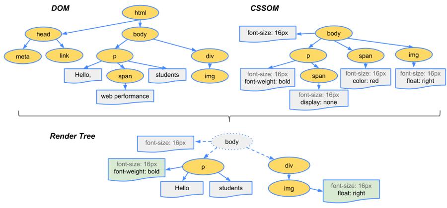

解析页面流程
简述
解析HTML，构建DOM树
解析CSS，生成CSS规则树
合并DOM树和CSS规则，生成render树
布局render树（layout/reflow），负责各元素尺寸、位置的计算
绘制render树（paint），绘制页面像素信息
浏览器会将各层的信息发送给GPU，GPU会将各层合成（composite），显示在屏幕上
如下图：
HTML解析，构建DOM
浏览器解析HTML，构建DOM树
解析过程：Bytes -> characters -> tokens -> nodes -> DOM
实例，假设有这样一个HTML页面：1
2
3
4
5
6
7
8
9
10
11<html>
<head>
<meta name="viewport" content="width=device-width,initial-scale=1">
<link href="style.css" rel="stylesheet">
<title>Critical Path</title>
</head>
<body>
<p>Hello <span>web performance</span> students!</p>
<div><img src="awesome-photo.jpg"></div>
</body>
</html>
浏览器处理如下：
重点过程：
Conversion转换：浏览器将获得的HTML内容（Bytes）基于他的编码转换为单个字符
Tokenizing分词：浏览器按照HTML规范标准将这些字符转换为不同的标记token，每个token都有自己独特的含义以及规则集
Lexing词法分析：分词的结果是得到一堆的token，此时把它们转换为对象，这些对象分别定义它们的属性和规则
DOM构建：因为HTML标记定义的就是不同标签之间的关系，这个关系就像是一个树形结构一样，例如：body对象的父节点就是HTML对象，然后段落p对象的父节点就是body对象
生成CSS规则
简述为：Bytes -> characters -> tokens -> nodes -> CSSOM
实例，有这样一个css文件：
1 | body { font-size: 16px } |
最终的CSSOM树就是：
构建渲染树
当DOM树和CSSOM都有了后，就要开始构建渲染树了
一般来说，渲染树和DOM树相对应的，但不是严格意义上的一一对应
有一些不可见的DOM元素不会插入到渲染树中，如head这种不可见的标签或者display: none等
示意图：

渲染
有了render树，接下来就是开始渲染了，基本流程如下：
简述：
- 计算CSS样式
- 构建渲染树
- 布局，主要定位坐标和大小，是否换行，各种position、overflow、z-index属性
- 绘制，将图像绘制出来
图中的线和箭头代表通过js动态修改了DOM或CSS，导致了回流或重绘
- 回流：一般意味着元素的内容、结果、位置和尺寸发生了变化，需要重新计算样式和渲染树
- 重绘：意味着元素发生的改变只是影响了元素的一些外观之类的时候（背景色，边框颜色，文字颜色等），此时只需要应用新样式绘制这个元素就可以了
回流
回流的成本开销要高于重绘，而且一个节点的回流往往会导致子节点以及同级节点的回流，所以优化方案中一般都包括：尽量避免回流
什么会引起回流
页面渲染初始化
DOM结构改变：删除了某个节点
render树变化：减少了padding
窗口resize
改变字体大小
获取某些属性，引发：
- 很多浏览器会对回流做优化，会等到数量足够时做一次批处理回流，但是除了render树的直接变化，当获取一些属性时，浏览器为了获得正确的值也会触发回流，这样使得浏览器优化无效，包括：
- offset(Top/Left/Width/Height)
- scroll(Top/Left/Width/Height)
- cilent(Top/Left/Width/Height)
- width,height
- 调用了getComputedStyle()或者IE的currentStyle
- 很多浏览器会对回流做优化，会等到数量足够时做一次批处理回流，但是除了render树的直接变化，当获取一些属性时，浏览器为了获得正确的值也会触发回流，这样使得浏览器优化无效，包括：
优化方案
回流一定伴随着重绘，重绘却可以单独出现
减少逐项更改样式，最好一次性更改style，或者将样式定义为class并一次性更新
避免循环操作dom，创建一个documentFragment或div，在它上面应用所有DOM操作，最后再把它添加到window.document中，也就是离线操作
避免多次调用触发浏览器回流的属性，如果需要，应该使用变量缓存
将复杂的元素绝对定位或固定定位，使得它脱离文档流，否则回流代价会很高
示例
1 | var s = document.body.style; |
简单层和复合层
上述中的渲染止步于绘制，但实际上绘制这一步就没有这么简单，它可以结合复合层和简单层的概念来讲。
简述：
默认只有一个复合图层，所有的DOM节点都是在这个复合图层下的
如果开启了硬件加速功能，可以将某个节点变成复合图层
复合图层之间的绘制互不干扰，由GPU直接控制
简单图层中，就算是absolute等布局，变化时不影响整体的回流，但由于在同一个图层中，仍然是会影响绘制的，因此做动画时性能仍然很低。而复合层是独立的，所以一般做动画推荐使用硬件加速
Chrome中的调试
Chrome的开发者工具中，Performance中可以看到详细的渲染过程
资源外链的下载
在解析html时，会遇到一些资源外链，此时就需要进行单独处理了
分类
- CSS样式资源
- JS脚本资源
- img图片类资源
遇到外链时的处理
当遇到上述的外链时，会单独开启一个下载线程去下载资源（http1.1中是每个资源的下载都要开启一个http请求，对应一个tcp/ip链接）
遇到CSS样式资源
CSS下载时异步，不会阻塞浏览器构建DOM树
会阻塞渲染，也就是在构建render时，会等到css下载解析完毕后才进行，这点与浏览器优化有关，防止css规则不断改变，避免了重复的构建
有例外，media query声明的CSS是不会阻塞渲染的
遇到JS脚本资源
阻塞浏览器的解析，发现一个外链脚本时，需等待脚本下载完成并执行后才会继续解析HTML
浏览器的优化，一般现代浏览器有优化，在脚本阻塞时，也会继续下载其它资源（有并发上限），虽然脚本可以并行下载，但解析过程仍然是阻塞的，也就是说必须这个脚本执行完毕后才会接下来的解析，并行下载只是一种优化而已
defer与async，普通的脚本是会阻塞浏览器解析的，但是可以加上defer或async属性，这样脚本就变成异步了，可以等到解析完毕后再执行
defer是延迟执行：在浏览器看起来的效果像是将脚本放在了body后面一样（虽然按规范应该是在DOMContentLoaded事件前，但实际上不同浏览器的优化效果不一样，也有可能在它后面）
async是异步执行：异步下载完毕后就会执行，不确保执行顺序，一定在onload前，但不确定在DOMContentLoaded事件的前或后
遇到图片类资源
遇到图片等资源时，直接就是异步下载，不会阻塞解析，下载完毕后直接用图片替换原有src的地方
loaded和domcontentloaded
DOMContentLoaded 事件触发时，仅当DOM加载完成，不包括样式表，图片(譬如如果有async加载的脚本就不一定完成)
load 事件触发时，页面上所有的DOM，样式表，脚本，图片都已经加载完成了